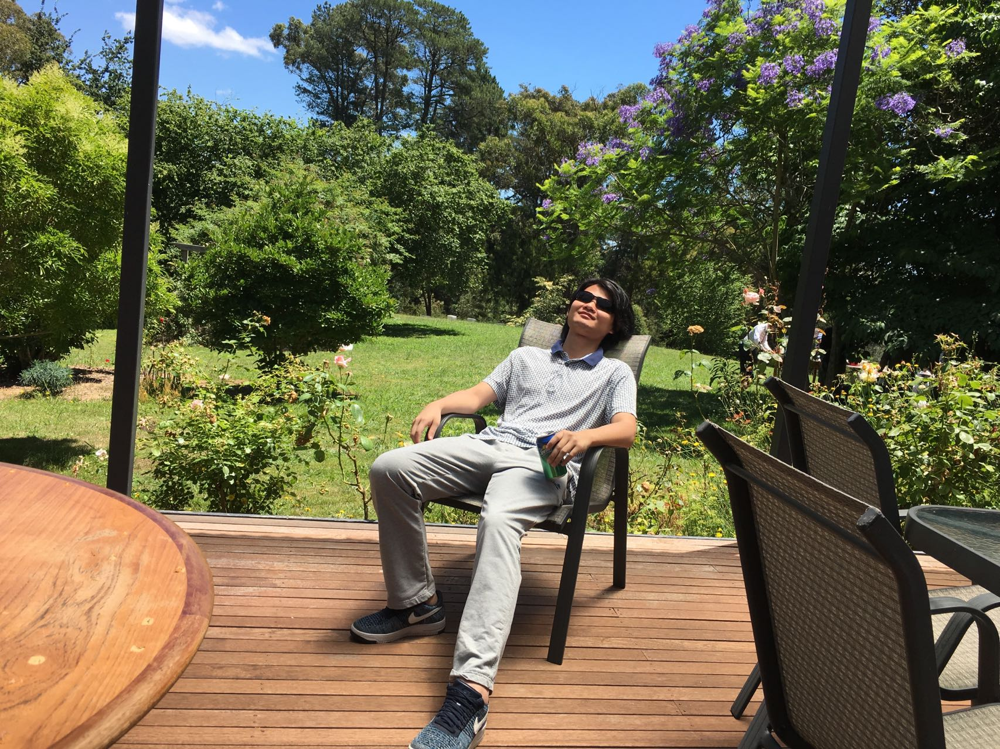
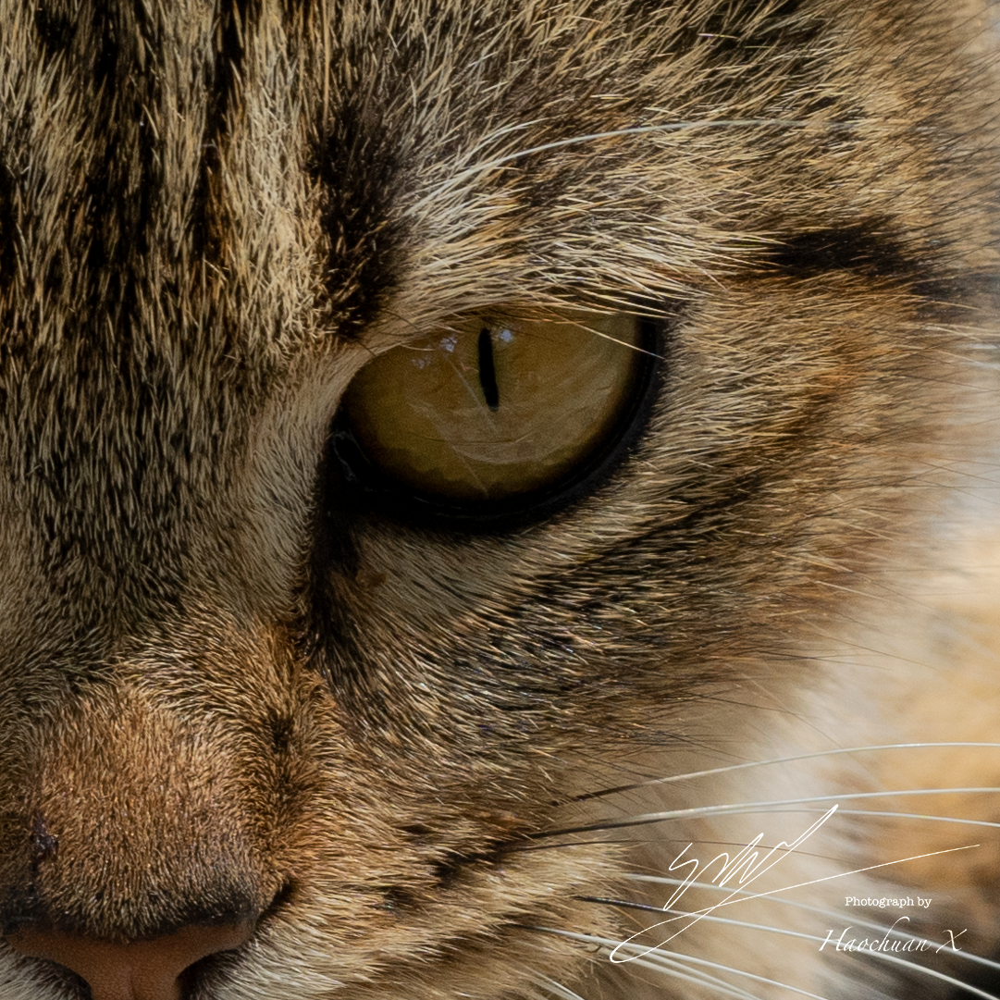
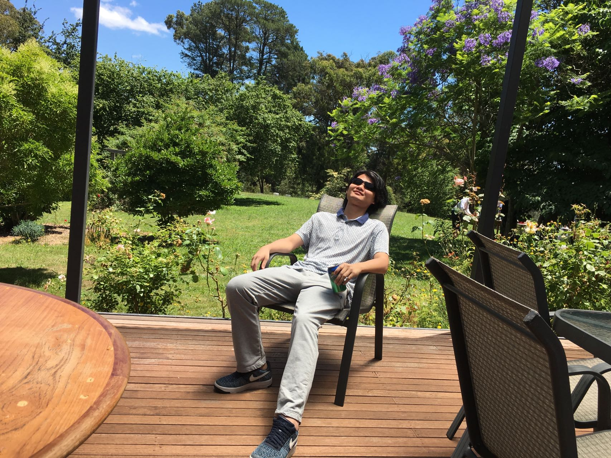
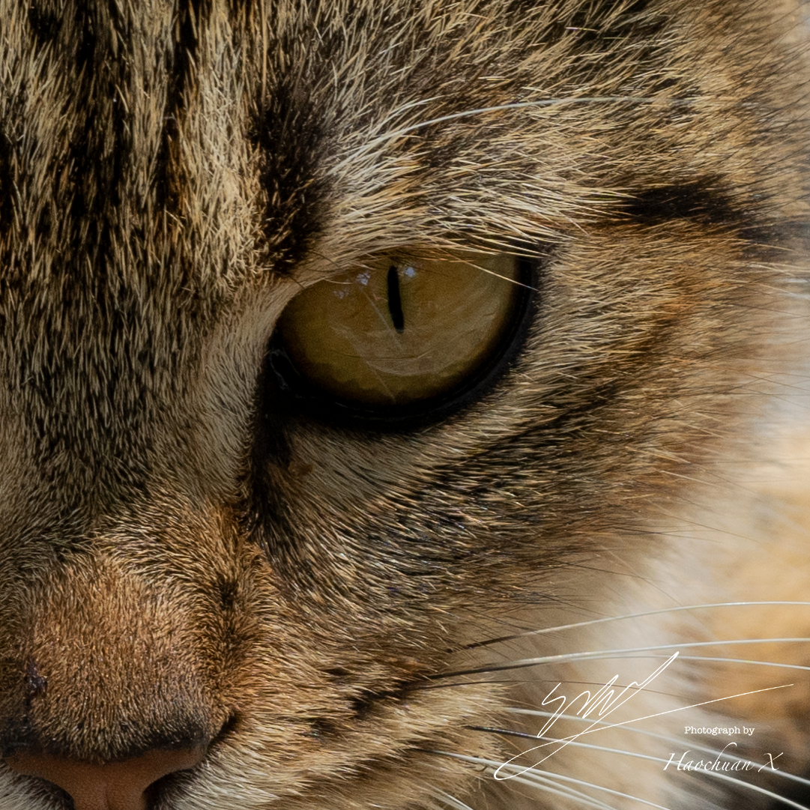

Team Profile Ideal Job Industry Data IT Work IT Technologies Project Ideas Group Reflection References
Hello everyone, nice to meet you all, we are team Lucky
This is a self-introduce website
Our team name is Lucky, our menbers are Haosheng Jiang, Haochuan Xie, Yibo Ding, Haohao Xing and Huijoon Jong.
Haohao:
Dear team members, after this period of cooperation, we have made significant progress. Everyone made progress, whether it was refinement of details or management of learning. We do every job with a high sense of responsibility. As IT major students, patience and carefulness are indispensable, which is reflected in you. Everyone is good at something; everyone has their own strengths. I believe that everyone has learned not only knowledge but other good qualities from this collaboration. Although we only get along for a short time, thank you for this cooperation to let me know you better. I hope we will continue our efforts and make greater progress and achievements.
Well done guys!
We did this!
Nice to meet YOU ALL!
We have overcome all the difficulty
We should celebrate this alfer I'm back to Melbourne!'
Let's crash the Ass 3
We got this!
  
 